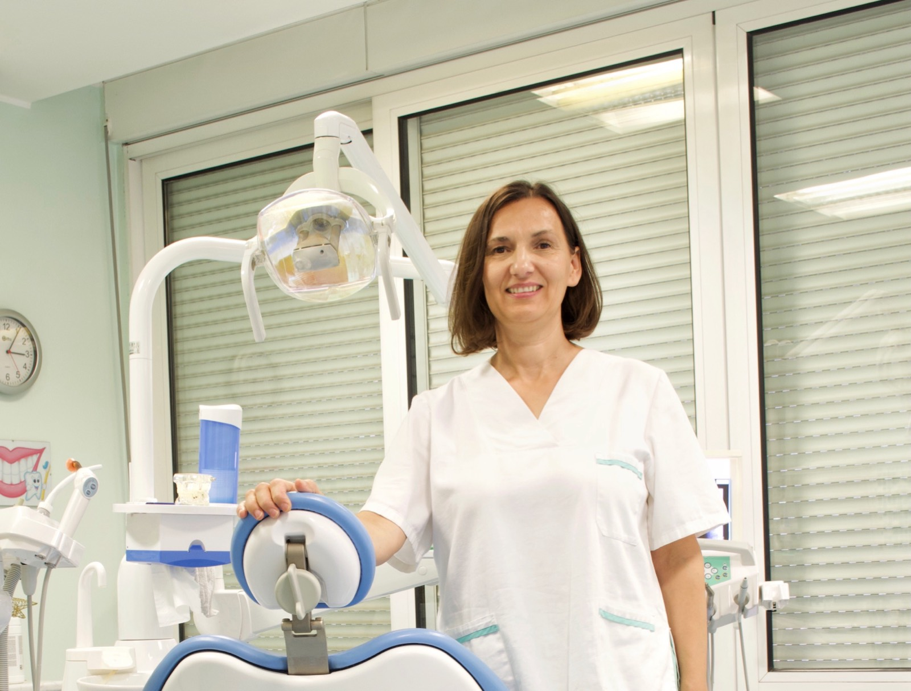
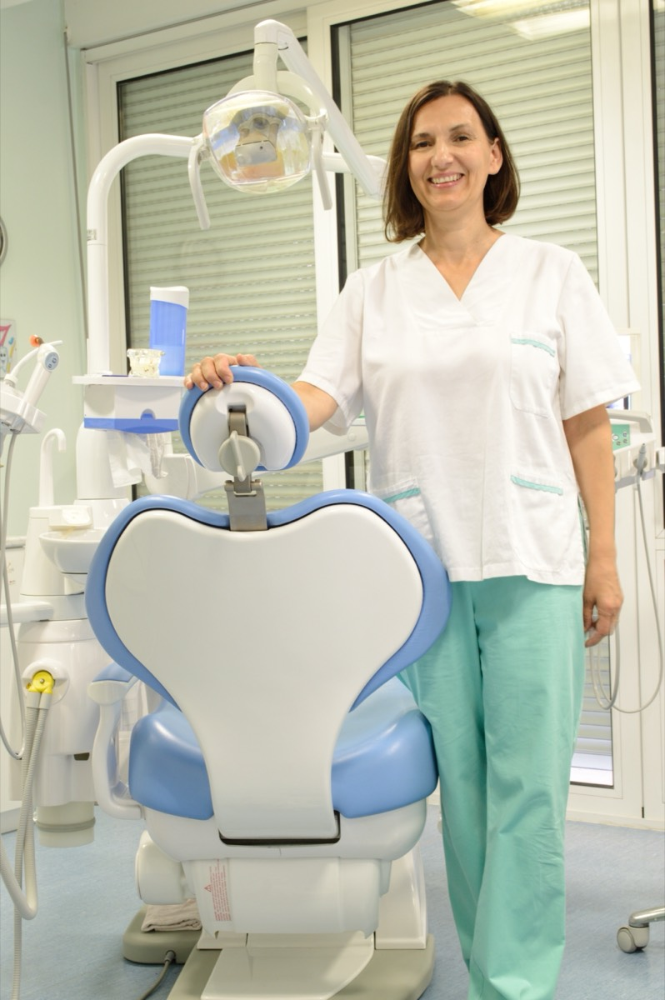
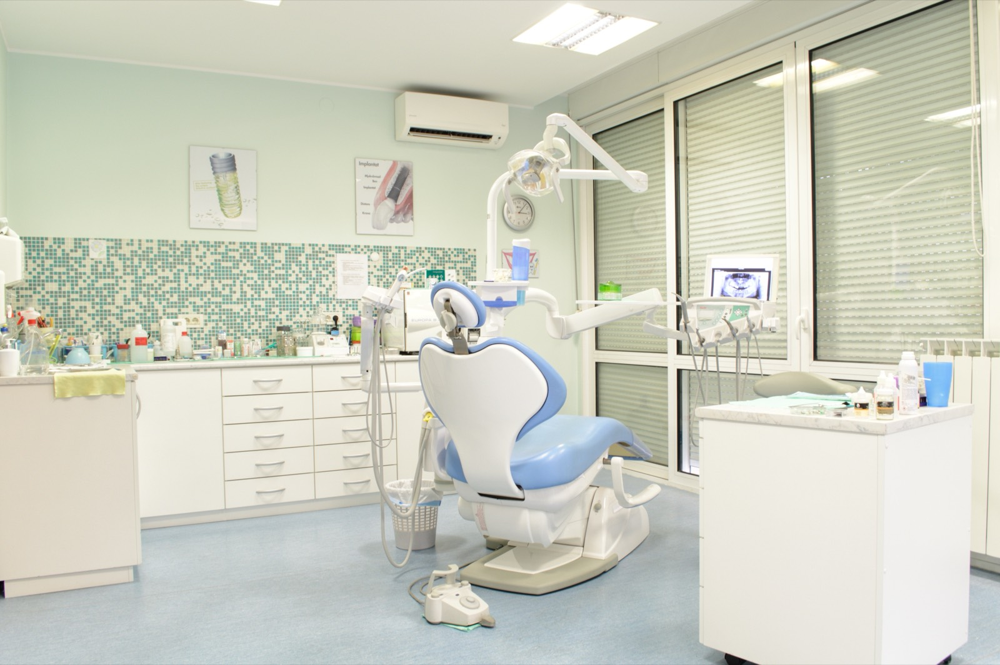
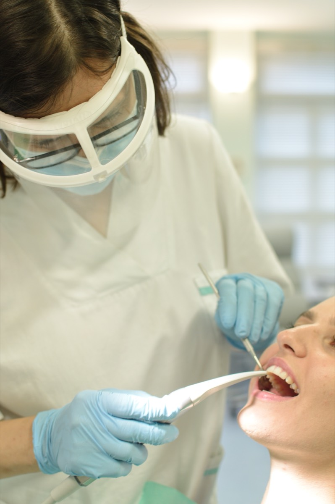
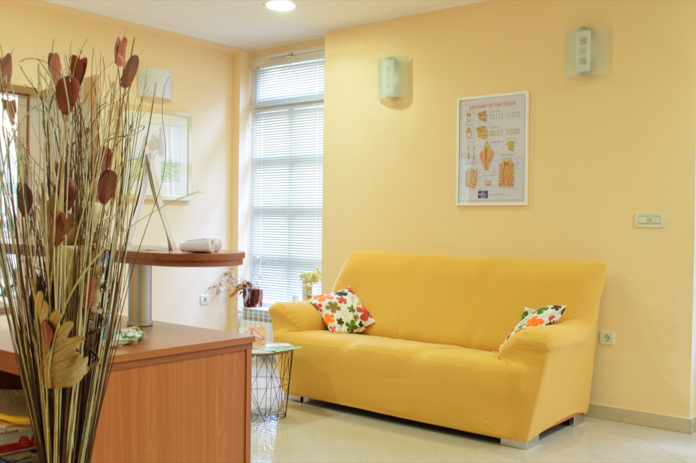
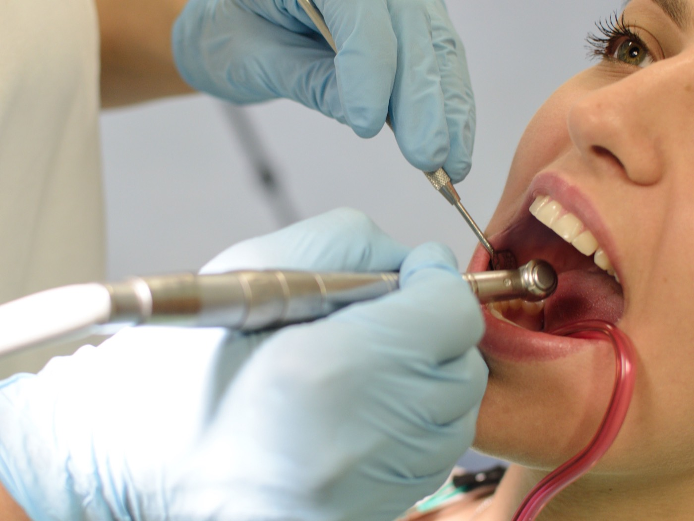
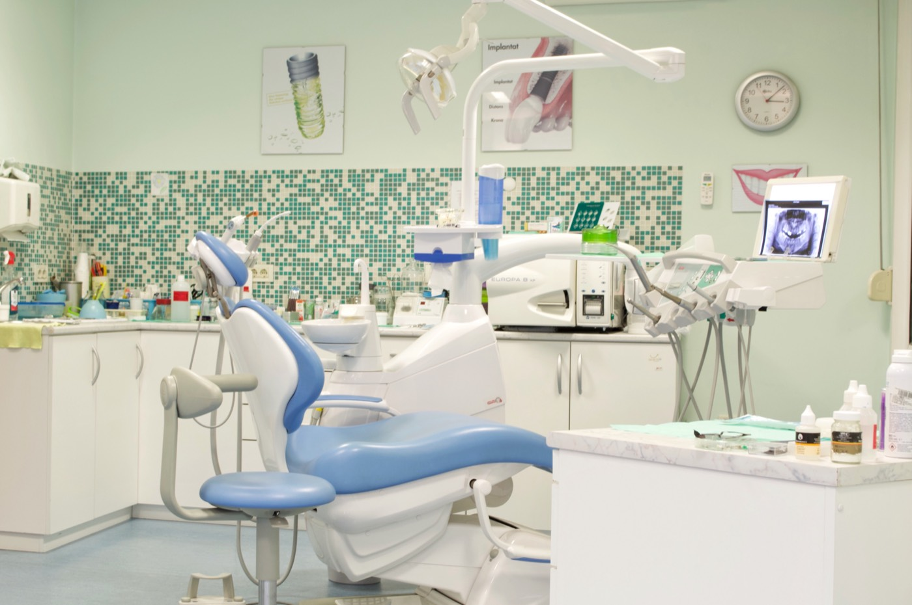

Smijeh je radost uma,osmijeh je radost srca.
VB dent radi od 2008. godine u modernom i opuštajućem ambijentu. Svakom pacijentu pristupamo individualno i posvećujemo dovoljno vremena da njegove želje uskladimo s mogućnostima moderne dentalne medicine.

Sve za zdrav i lijep osmijeh
Od preventive i liječenja karijesa do implantata i protetike. Kliknite na područje za opis zahvata.
Implantologija
Trajno fiksno rješenje kod gubitka jednog ili više zuba.
Saznajte višeOralna kirurgija
Vađenje zuba i korijena, apikotomija, nadogradnja kosti.
Saznajte višeFiksna protetika
Krunice i mostovi od metal-keramike, cirkona i E.max keramike.
Saznajte višeMobilna protetika
Totalna i djelomična proteza te kombinirani rad.
Saznajte višeParodontologija
Čišćenje kamenca, poliranje, pjeskarenje i kiretaža.
Saznajte višeEstetska i rekonstruktivna
Izbjeljivanje, estetski ispuni, fasete (ljuskice) i krunice.
Saznajte višeDječja i preventivna
Polako i bez straha, od prvih mliječnih zubi.
Saznajte višeKonzervativna i endodoncija
Liječenje karijesa, ispuni i liječenje korijenskog kanala.
Saznajte više
Vesna Baričević, dr. med. dent.
Studij stomatologije završila je na Medicinskom fakultetu u Rijeci 1992. godine. Nakon položenog stručnog ispita tri je godine radila u privatnoj ordinaciji u Pagu, a zatim deset godina u privatnoj poliklinici u Rijeci, gdje je stekla iskustvo u protetici i implantologiji.
Svoju ordinaciju otvorila je 2008. godine. Sudjelovala je na brojnim seminarima i kongresima i članica je Hrvatske komore dentalne medicine.
Moderan i opuštajući prostor
Svijetla čekaonica i ordinacija u kojoj se radi uz visoke higijenske i sigurnosne standarde.





Izvrsna usluga
Kvalitetni stomatolozi i stomatološki tehničari.
Kvalitetna oprema
Samo najbolje za naše pacijente.
Provjereni materijali
GC, Ivoclar Vivadent, 3M i iskusni dentalni tehničari.
Higijena i sigurnost
Ordinacija posluje uz visoke higijenske i sigurnosne standarde.
Naručite se na besplatan prvi pregled
Odaberite željeni termin i pošaljite upit. U najkraćem mogućem roku poslat ćemo vam potvrdu dolaska, a ako odabrano vrijeme nije moguće, ponudit ćemo vam drugi termin.
- Telefon: 051 639 641
- Mobitel: 091 783 1678
- E-mail: vbdenti@gmail.com
Prije prvog dolaska
Kako se naručiti na prvi pregled?
Ako ste prvi put kod nas, prvi pregled je besplatan. Ispunite obrazac na ovoj stranici ili nazovite 051 639 641 (mob. 091 783 1678). Javit ćemo vam se sa slobodnim terminom, a ako odabrano vrijeme nije moguće, ponudit ćemo drugi termin.
Trebam li rezervirati termin unaprijed?
Da. Termin je potrebno rezervirati unaprijed, telefonom, e-mailom ili putem obrasca.
Je li ugradnja implantata bolna?
Zahvat se izvodi pod lokalnom anestezijom koja osigurava bezbolan postupak ugradnje zubnih implantata.
Koliko traju zubni implantati?
Uz dobru oralnu higijenu i redovite kontrole zubni implantati mogu trajati doživotno.
Koliko često treba doći na kontrolu i čišćenje kamenca?
Za zdravlje zubnog mesa preporučuje se posjet doktoru dentalne medicine jednom do dva puta godišnje, kada se uklanjaju meke i tvrde naslage.
Kada dijete prvi put dovesti stomatologu?
Što ranije, dok su još mliječni zubi. Djeci pokazujemo kako pravilno četkati zube, koristimo detektor plaka i premazujemo zube gelom s niskim udjelom fluora.
Koje materijale koristite?
U radu koristimo materijale proizvođača GC, Ivoclar Vivadent i 3M te surađujemo s iskusnim dentalnim tehničarima.
Gdje smo
VB dent – ordinacija dentalne medicine
- Telefon
- 051 639 641
- Mobitel
- 091 783 1678
- vbdenti@gmail.com
- Termini
- Isključivo uz prethodnu rezervaciju
 Google kartePrimorska 1C, RijekaOtvori kartu
Google kartePrimorska 1C, RijekaOtvori kartu